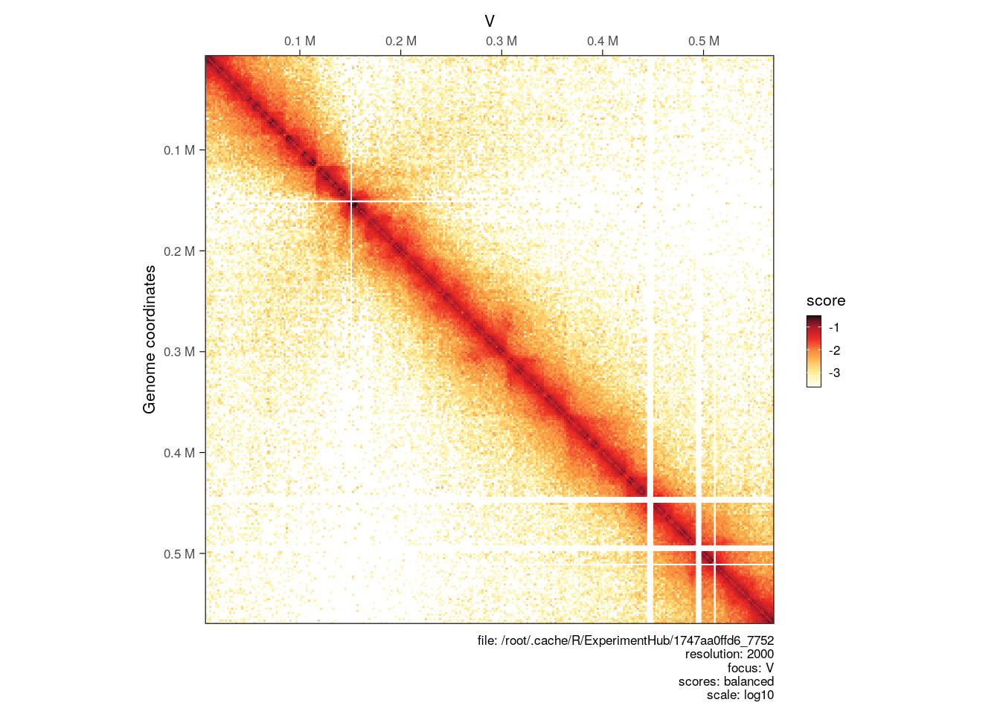
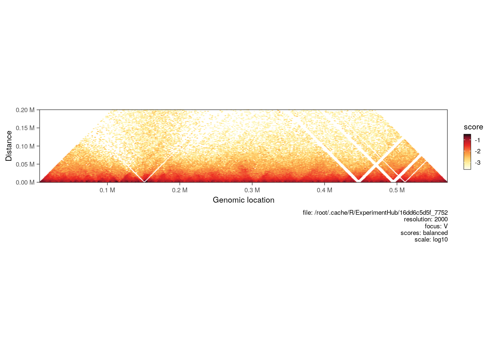
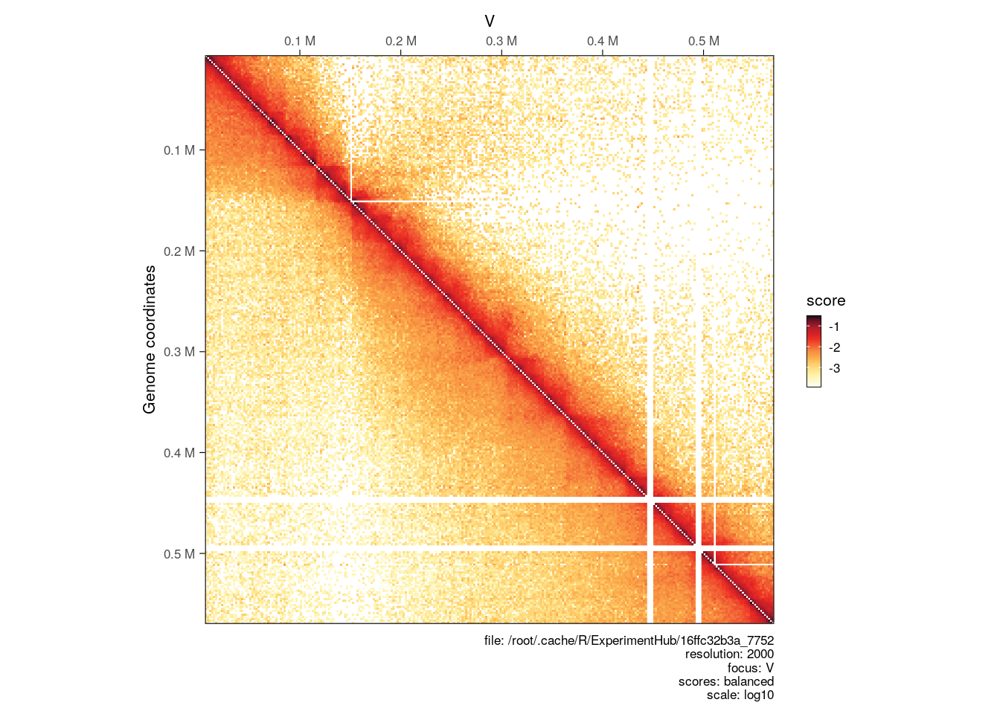
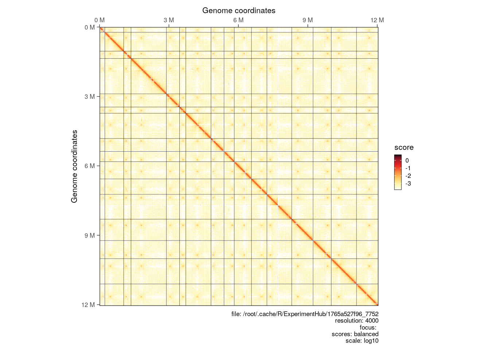
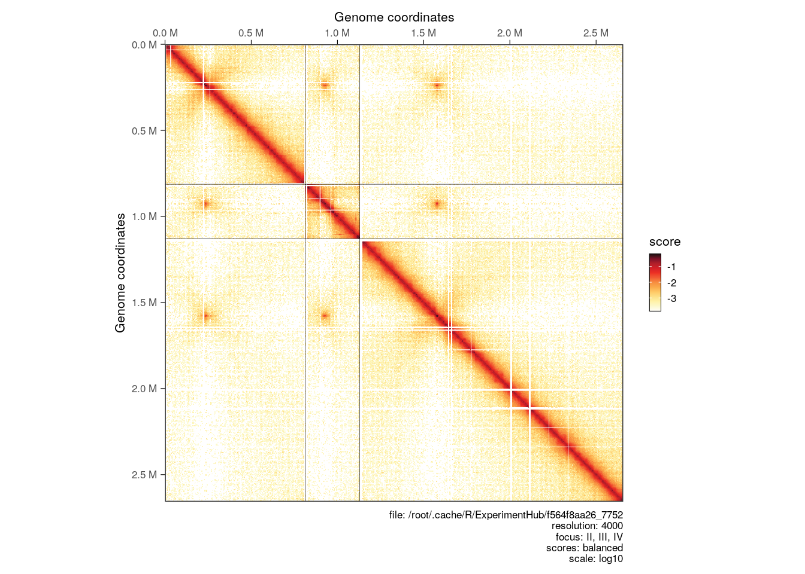
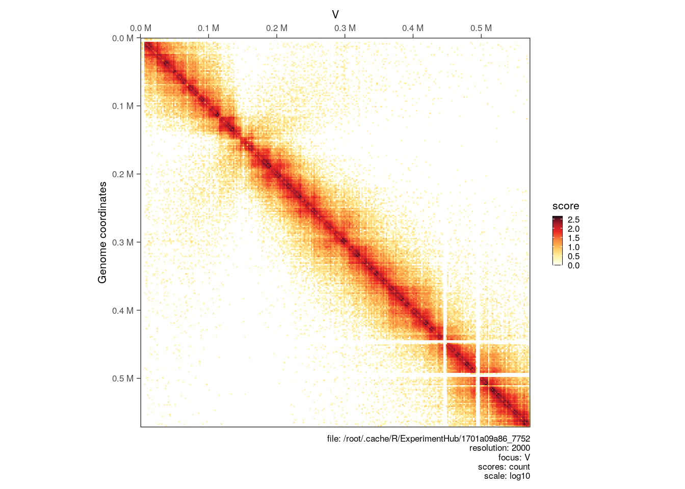
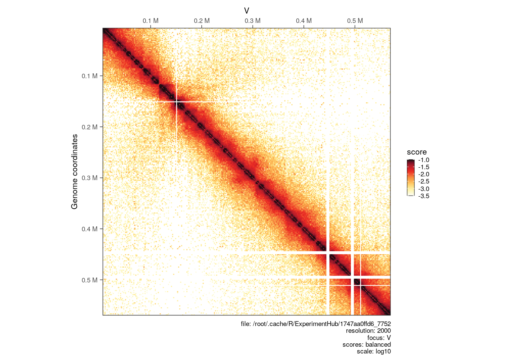
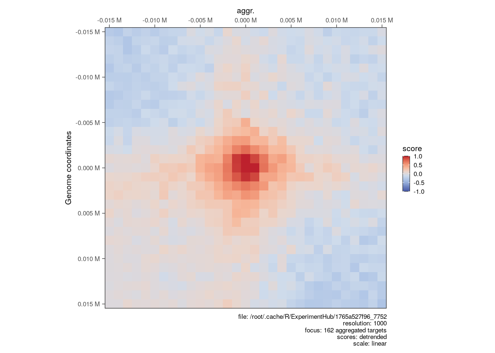

library(HiCExperiment)
library(HiContactsData)
# ---- This downloads an example `.mcool` file and caches it locally
coolf <- HiContactsData('yeast_wt', 'mcool')
# ---- This creates a connection to the disk-stored `.mcool` file
cf <- CoolFile(coolf)
cf
# ---- This imports contacts from the chromosome `V` at resolution `2000`
hic <- import(cf, focus = 'V', resolution = 2000)4 Hi-C data visualization
Aims
This chapter focuses on the various visualization tools offered by HiContacts to plot HiCExperiment contact matrices in R.
Generating the example
hic object 👇
To demonstrate how to visualize a HiCExperiment contact matrix, we will create an HiCExperiment object from an example .cool file provided in the HiContactsData package.
hic
## `HiCExperiment` object with 303,545 contacts over 289 regions
## -------
## fileName: "/root/.cache/R/ExperimentHub/f56b079dc5_7752"
## focus: "V"
## resolutions(5): 1000 2000 4000 8000 16000
## active resolution: 2000
## interactions: 20177
## scores(2): count balanced
## topologicalFeatures: compartments(0) borders(0) loops(0) viewpoints(0) centromeres(16)
## pairsFile: N/A
## metadata(0):4.1 Visualizing Hi-C contact maps
Visualizing Hi-C contact maps is often a necessary step in exploratory data analysis. A Hi-C contact map is usually displayed as a heatmap, in which:
- Each axis represents a section of the genome of interest (either a segment of a chromosome, or several chromosomes, …).
- The color code aims to represent “interaction frequency”, which can be expressed in “raw” counts or normalized (balanced).
- Other metrics can also be displayed in Hi-C heatmaps, e.g. ratios of interaction frequency between two Hi-C experiments, p-values of differential interaction analysis, …
- Axes are often identical, representing interactions constrained within a single genomic window, a.k.a. on-diagonal matrices.
- However, axes can be different: this is the case when off-diagonal matrices are displayed.
4.1.1 Single map
Simple visualization of disk-stored Hi-C contact matrices can be done by:
- Importing the interactions over the genomic location of interest into a
HiCExperimentobject; - Using
plotMatrixfunction (provided byHiContacts) to generate a plot.
library(HiContacts)
plotMatrix(hic)
Note
A caption summarizing the plotting parameters is added below the heatmap. This can be removed with caption = FALSE.
4.1.2 Horizontal map
Hi-C maps are sometimes visualized in a “horizontal” style, where a square on-diagonal heatmap is tilted by 45˚ and truncated to only show interactions up to a certain distance from the main diagonal.
When a maxDistance argument is provided to plotMatrix, it automatically generates a horizontal-style heatmap.
plotMatrix(hic, maxDistance = 200000)
4.1.3 Side-by-side maps
Sometimes, one may want to visually plot 2 Hi-C samples side by side to compare the interaction landscapes over the same genomic locus. This can be done by adding a second HiCExperiment (imported with the same focus) with the compare.to argument.
Here, we are importing a second .mcool file corresponding to a Hi-C experiment performed in a eco1 yeast mutant:
hic2 <- import(
CoolFile(HiContactsData('yeast_eco1', 'mcool')),
focus = 'V',
resolution = 2000
)We then plot the 2 matrices side by side. The first will be displayed in the top right corner and the second (provided with compare.to) will be in the bottom left corner.
plotMatrix(hic, compare.to = hic2)
4.1.4 Plotting multiple chromosomes
Interactions from multiple chromosomes can be visualized in a Hi-C heatmap. One needs to (1) first parse the entire contact matrix in R, (2) then subset interactions over chromosomes of interest with [ and (3) use plotMatrix to generate the multi-chromosome plot.
full_hic <- import(cf, resolution = 4000)
plotMatrix(full_hic)
hic_subset <- full_hic[c("II", "III", "IV")]
plotMatrix(hic_subset)
4.2 Hi-C maps customization options
A number of customization options are available for the plotMatrix function. The next subsections focus on how to:
- Pick the
scoresof interest to represent in a Hi-C heatmap; - Change the numeric scale and boundaries;
- Change the color map;
- Extra customization options
4.2.1 Choosing scores
By default, plotMatrix will attempt to plot balanced (coverage normalized) Hi-C matrices. However, extra scores may be associated with interactions in a HiCExperiment object (more on this in the next chapter)
For instance, we can plot the count scores, which are un-normalized raw contact counts directly obtained when binning a .pairs file:
plotMatrix(hic, use.scores = 'count')
4.2.2 Choosing scale
The color scale is automatically adjusted to range from the minimum to the maximum scores of the HiCExperiment being plotted. This can be adjusted using the limits argument.
plotMatrix(hic, limits = c(-3.5, -1))
4.2.3 Choosing color map
?HiContacts::palettes returns a list of available color maps to use with plotMatrix. Any custom color map can also be used by manually specifying a vector of colors.
# ----- `afmhotr` color map is shipped in the `HiContacts` package
afmhotrColors()
## [1] "#ffffff" "#f8f5c3" "#f4ee8d" "#f6be35" "#ee7d32" "#c44228" "#821d19"
## [8] "#381211" "#050606"
plotMatrix(
hic,
use.scores = 'balanced',
limits = c(-4, -1),
cmap = afmhotrColors()
)4.3 Advanced visualization
4.3.1 Overlaying topological features
Topological features (e.g. chromatin loops, domain borders, A/B compartments, e.g. …) are often displayed over a Hi-C heatmap.
To illustrate how to do this, let’s import pre-computed chromatin loops in R. These loops have been identified using chromosight (Matthey-Doret et al. (2020)) on the contact matrix which we imported interactions from.
library(rtracklayer)
library(InteractionSet)
loops <- system.file('extdata', 'S288C-loops.bedpe', package = 'HiCExperiment') |>
import() |>
makeGInteractionsFromGRangesPairs()
loops
## GInteractions object with 162 interactions and 0 metadata columns:
## seqnames1 ranges1 seqnames2 ranges2
## <Rle> <IRanges> <Rle> <IRanges>
## [1] I 3001-4000 --- I 29001-30000
## [2] I 29001-30000 --- I 50001-51000
## [3] I 95001-96000 --- I 128001-129000
## [4] I 133001-134000 --- I 157001-158000
## [5] II 8001-9000 --- II 46001-47000
## ... ... ... ... ... ...
## [158] XVI 773001-774000 --- XVI 803001-804000
## [159] XVI 834001-835000 --- XVI 859001-860000
## [160] XVI 860001-861000 --- XVI 884001-885000
## [161] XVI 901001-902000 --- XVI 940001-941000
## [162] XVI 917001-918000 --- XVI 939001-940000
## -------
## regions: 316 ranges and 0 metadata columns
## seqinfo: 16 sequences from an unspecified genome; no seqlengthsSimilarly, borders have also been mapped with chromosight. We can also import them in R.
borders <- system.file('extdata', 'S288C-borders.bed', package = 'HiCExperiment') |>
import()
borders
## GRanges object with 814 ranges and 0 metadata columns:
## seqnames ranges strand
## <Rle> <IRanges> <Rle>
## [1] I 73001-74000 *
## [2] I 108001-109000 *
## [3] I 181001-182000 *
## [4] II 90001-91000 *
## [5] II 119001-120000 *
## ... ... ... ...
## [810] XVI 777001-778000 *
## [811] XVI 796001-797000 *
## [812] XVI 811001-812000 *
## [813] XVI 890001-891000 *
## [814] XVI 933001-934000 *
## -------
## seqinfo: 16 sequences from an unspecified genome; no seqlengthsChromatin loops are stored in GInteractions while borders are GRanges. The former will be displayed as off-diagonal circles and the later as on-diagonal diamonds on the Hi-C heatmap.
plotMatrix(hic, loops = loops, borders = borders)4.3.2 Aggregated Hi-C maps
Finally, Hi-C map “snippets” (i.e. extracts) are often aggregated together to show an average signal. This analysis is sometimes referred to as APA (Aggregated Plot Analysis).
Aggregated Hi-C maps can be computed over a collection of targets using the aggregate function. These targets can be GRanges (to extract on-diagonal snippets) or GInteractions (to extract off-diagonal snippets). The flankingBins specifies how many matrix bins should be extracted on each side of the targets of interest.
Here, we compute the aggregated Hi-C snippets of ± 15kb around each chromatin loop listed in loops.
hic <- zoom(hic, 1000)
aggr_loops <- aggregate(hic, targets = loops, flankingBins = 15)
## Going through preflight checklist...
## Parsing the entire contact matrice as a sparse matrix...
## Modeling distance decay...
## Filtering for contacts within provided targets...
aggr_loops
## `AggrHiCExperiment` object over 148 targets
## -------
## fileName: "/root/.cache/R/ExperimentHub/f56b079dc5_7752"
## focus: 148 targets
## resolutions(5): 1000 2000 4000 8000 16000
## active resolution: 1000
## interactions: 961
## scores(4): count balanced expected detrended
## slices(4): count balanced expected detrended
## topologicalFeatures: targets(148) compartments(0) borders(0) loops(0) viewpoints(0) centromeres(16)
## pairsFile: N/A
## metadata(0):aggregate generates a AggrHiCExperiment object, a flavor of HiCExperiment class of objects.
-
AggrHiCExperimentobjects have an extraslicesslot. This stores a list ofarrays, one perscores. Eacharrayis of 3 dimensions,xandyrepresenting the heatmap axes, andzrepresenting the index of thetarget. -
AggrHiCExperimentobjects also have a mandatorytopologicalFeatureselement namedtargets, storing the genomic loci provided inaggregate.
slices(aggr_loops)
## List of length 4
## names(4): count balanced expected detrended
dim(slices(aggr_loops, 'count'))
## [1] 31 31 148
topologicalFeatures(aggr_loops, 'targets')
## Pairs object with 148 pairs and 0 metadata columns:
## first second
## <GRanges> <GRanges>
## [1] I:14501-44500 I:35501-65500
## [2] I:80501-110500 I:113501-143500
## [3] I:118501-148500 I:142501-172500
## [4] II:33501-63500 II:63501-93500
## [5] II:134501-164500 II:159501-189500
## ... ... ...
## [144] XVI:586501-616500 XVI:606501-636500
## [145] XVI:733501-763500 XVI:754501-784500
## [146] XVI:758501-788500 XVI:788501-818500
## [147] XVI:819501-849500 XVI:844501-874500
## [148] XVI:845501-875500 XVI:869501-899500The resulting AggrHiCExperiment can be plotted using the same plotMatrix function with the arguments described above.
plotMatrix(
aggr_loops,
use.scores = 'detrended',
scale = 'linear',
limits = c(-1, 1),
cmap = bgrColors()
)
References
Matthey-Doret, C., Baudry, L., Breuer, A., Montagne, R., Guiglielmoni, N., Scolari, V., Jean, E., Campeas, A., Chanut, P. H., Oriol, E., Méot, A., Politis, L., Vigouroux, A., Moreau, P., Koszul, R., & Cournac, A. (2020). Computer vision for pattern detection in chromosome contact maps. Nature Communications, 11(1). https://doi.org/10.1038/s41467-020-19562-7